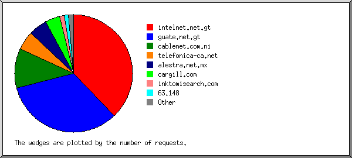
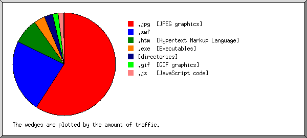

Web Server Statistics for tierrasegura.com Web Server Statistics for tierrasegura.com
Web Server Statistics for tierrasegura.com Web Server Statistics for tierrasegura.com(Go To: Top: General Summary: Monthly Report: Daily Summary: Hourly Summary: Domain Report: Organization Report: Failed Referrer Report: Referring Site Report: Browser Report: Browser Summary: Operating System Report: Status Code Report: File Size Report: File Type Report: Directory Report: Request Report)
(Figures in parentheses refer to the 7-day period ending Jan 31
2005 at 5:23 PM).
Successful requests: 4,383 (66)
Average successful requests per day: 59 (9)
Successful requests for pages: 628 (5)
Average successful requests for pages per day: 8 (0)
Failed requests: 41 (1)
Distinct files requested: 75 (1)
Distinct hosts served: 91 (1)
Data transferred: 22.425 megabytes (494.681 kilobytes)
Average data transferred per day: 310.045 kilobytes (70.668 kilobytes)
(Go To: Top: General Summary: Monthly Report: Daily Summary: Hourly Summary: Domain Report: Organization Report: Failed Referrer Report: Referring Site Report: Browser Report: Browser Summary: Operating System Report: Status Code Report: File Size Report: File Type Report: Directory Report: Request Report)
Each unit ( ) represents 10 requests
for pages or part thereof.
) represents 10 requests
for pages or part thereof.
month: #reqs: #pages: --------: -----: ------: Nov 2004: 2589: 325:Busiest month: Nov 2004 (325 requests for pages).
(Go To: Top: General Summary: Monthly Report: Daily Summary: Hourly Summary: Domain Report: Organization Report: Failed Referrer Report: Referring Site Report: Browser Report: Browser Summary: Operating System Report: Status Code Report: File Size Report: File Type Report: Directory Report: Request Report)
Each unit () represents 4 requests
for pages or part thereof.
day: #reqs: #pages: ---: -----: ------: Sun: 201: 40:Mon: 655: 122:
(Go To: Top: General Summary: Monthly Report: Daily Summary: Hourly Summary: Domain Report: Organization Report: Failed Referrer Report: Referring Site Report: Browser Report: Browser Summary: Operating System Report: Status Code Report: File Size Report: File Type Report: Directory Report: Request Report)
Each unit () represents 2 requests
for pages or part thereof.
hour: #reqs: #pages: ----: -----: ------: 0: 41: 7:15: 205: 31:
17: 95: 9:
(Go To: Top: General Summary: Monthly Report: Daily Summary: Hourly Summary: Domain Report: Organization Report: Failed Referrer Report: Referring Site Report: Browser Report: Browser Summary: Operating System Report: Status Code Report: File Size Report: File Type Report: Directory Report: Request Report)

Listing domains, sorted by the amount of traffic.
#reqs: %bytes: domain -----: ------: ------ 3761: 64.69%: .gt (Guatemala) 421: 24.99%: .net (Networks) 92: 6.48%: .com (Commercial) 97: 3.68%: [unresolved numerical addresses] 12: 0.16%: .sc (Seychelles)
(Go To: Top: General Summary: Monthly Report: Daily Summary: Hourly Summary: Domain Report: Organization Report: Failed Referrer Report: Referring Site Report: Browser Report: Browser Summary: Operating System Report: Status Code Report: File Size Report: File Type Report: Directory Report: Request Report)

Listing the top 20 organizations by the number of requests, sorted by the number of requests.
#reqs: %bytes: organization
-----: ------: ------------
2106: 20.36%: guate.net.gt
1630: 43.13%: intelnet.net.gt
168: 11.02%: telefonica-ca.net
105: 2.70%: newcomamericas.net
90: 8.21%: gua.net
58: 1.94%: 66.201
54: 2.92%: t-dialin.net
51: 4.21%: alexa.com
31: 1.93%: cox-internet.com
25: 1.21%: 198.108
25: 1.21%: terra.com.gt
12: 0.46%: 63.148
12: 0.16%: sc
8: 0.27%: thunderstone.com
2: 0.07%: 12
1: 0.04%: netcraft.com
1: 0.04%: futuresoft.com
1: 0.04%: twtelecom.net
1: 0.04%: ev1servers.net
1: 0.04%: secureserver.net
1: 0.04%: [not listed: 1 organization]
(Go To: Top: General Summary: Monthly Report: Daily Summary: Hourly Summary: Domain Report: Organization Report: Failed Referrer Report: Referring Site Report: Browser Report: Browser Summary: Operating System Report: Status Code Report: File Size Report: File Type Report: Directory Report: Request Report)

Listing referring URLs, sorted by the number of failed requests.
#reqs: URL
-----: ---
12: http://www.whois.sc/
1: http://www.tierrasegura.com/
(Go To: Top: General Summary: Monthly Report: Daily Summary: Hourly Summary: Domain Report: Organization Report: Failed Referrer Report: Referring Site Report: Browser Report: Browser Summary: Operating System Report: Status Code Report: File Size Report: File Type Report: Directory Report: Request Report)

Listing referring sites, sorted by the number of requests.
#reqs: site
-----: ----
2725: http://www.tierrasegura.com/
97: http://tierrasegura.com/
12: http://www.paginasamarillas.com/
12: http://www.whois.sc/
1: http://www.tierrasegura.com:2082/
1: http://inversionescf.com:2086/
(Go To: Top: General Summary: Monthly Report: Daily Summary: Hourly Summary: Domain Report: Organization Report: Failed Referrer Report: Referring Site Report: Browser Report: Browser Summary: Operating System Report: Status Code Report: File Size Report: File Type Report: Directory Report: Request Report)

Listing browsers with at least 1 request for a page, sorted by the number of requests for pages.
#reqs: #pages: browser
-----: ------: -------
513: 179: Mozilla/3.01 (compatible;)
1089: 168: Mozilla/4.0 (compatible; MSIE 6.0; Windows NT 5.1)
639: 83: Mozilla/4.0 (compatible; MSIE 6.0; Windows NT 5.1; SV1)
945: 71: Mozilla/4.0 (compatible; MSIE 6.0; Windows 98; FunWebProducts-MyWay; Alexa Toolbar)
51: 31: ia_archiver
12: 12: SurveyBot/2.3 (Whois Source)
12: 12: Mozilla/4.0 (compatible; MSIE 6.0; Windows XP)
113: 10: Mozilla/4.0 (compatible; MSIE 6.0; Windows NT 5.1; .NET CLR 1.0.3705)
60: 6: Mozilla/4.0 (compatible; MSIE 5.01; Windows NT 5.0)
56: 6: Mozilla/4.0 (compatible; MSIE 5.5; Windows 98)
55: 6: Mozilla/5.0 (Windows; U; Windows NT 5.1; en-US; rv:1.7.2) Gecko/20040804 Netscape/7.2 (ax)
164: 6: Mozilla/2.0 (compatible; MS FrontPage 4.0)
8: 6: Mozilla/4.0 (compatible; T-H-U-N-D-E-R-S-T-O-N-E)
38: 6: Mozilla/5.0 (Windows; U; Windows NT 5.1; es-ES; rv:1.7.1) Gecko/20040707
83: 5: Mozilla/4.0 (compatible; MSIE 6.0; Windows 98; Win 9x 4.90; ESB{EBD3F4D6-3393-41E2-9733-DB8659860613}; Alexa Toolbar)
54: 4: Mozilla/4.0 (compatible; MSIE 6.0; Windows NT 5.1; SV1; .NET CLR 1.1.4322)
31: 4: Mozilla/4.0 (compatible; MSIE 6.0; Windows NT 5.0)
58: 2: Mozilla/4.0 (compatible; MSIE 6.0; Windows NT 5.1; {87168E0E-AEA2-4C1F-8664-B2BD3B513ECC})
52: 2: Mozilla/5.0 (Windows; U; Windows NT 5.1; rv:1.7.3) Gecko/20041001 Firefox/0.10.1
1: 1: NPBot (http://www.nameprotect.com/botinfo.html)
1: 1: Mozilla/4.0 (Compatible; MSIE 6.0; Windows NT 5.1)
1: 1: InnerpriseBot/1.0 (http://www.innerprise.com/)
1: 1: Microsoft Data Access Internet Publishing Provider Cache Manager
1: 1: Sqworm/2.9.85-BETA (beta_release; 20011115-775; i686-pc-linux-gnu)
25: 1: Mozilla/4.0 (compatible; MSIE 6.0; Windows 98)
1: 1: curl/7.10.6 (i386-redhat-linux-gnu) libcurl/7.10.6 OpenSSL/0.9.7a ipv6 zlib/1.1.4
25: 1: Mozilla/4.0 (compatible; MSIE 5.5; Windows NT 4.0; DigExt)
293: 0: [not listed: 1 browser]
(Go To: Top: General Summary: Monthly Report: Daily Summary: Hourly Summary: Domain Report: Organization Report: Failed Referrer Report: Referring Site Report: Browser Report: Browser Summary: Operating System Report: Status Code Report: File Size Report: File Type Report: Directory Report: Request Report)

Listing browsers with at least 1 request for a page, sorted by the number of requests for pages.
#: #reqs: #pages: browser --: -----: ------: ------- 1: 3191: 374: MSIE : 3050: 361: MSIE/6 : 141: 13: MSIE/5 2: 685: 191: Netscape (compatible) 3: 51: 31: ia_archiver 4: 145: 14: Mozilla : 145: 14: Mozilla/1 5: 12: 12: SurveyBot : 12: 12: SurveyBot/2 6: 1: 1: InnerpriseBot : 1: 1: InnerpriseBot/1 7: 1: 1: NPBot (http: : 1: 1: NPBot (http://www 8: 1: 1: curl : 1: 1: curl/7 9: 1: 1: Sqworm : 1: 1: Sqworm/2 10: 1: 1: Microsoft Data Access Internet Publishing Provider Cache Manager : 293: 0: [not listed: 1 browser]
(Go To: Top: General Summary: Monthly Report: Daily Summary: Hourly Summary: Domain Report: Organization Report: Failed Referrer Report: Referring Site Report: Browser Report: Browser Summary: Operating System Report: Status Code Report: File Size Report: File Type Report: Directory Report: Request Report)

Listing operating systems, sorted by the number of requests for pages.
#: #reqs: #pages: OS --: -----: ------: -- 1: 3336: 388: Windows : 1966: 280: Windows XP : 1026: 78: Windows 98 : 145: 14: Unknown Windows : 91: 10: Windows 2000 : 83: 5: Windows ME : 25: 1: Windows NT 2: 1044: 237: OS unknown 3: 2: 2: Unix : 2: 2: Linux
(Go To: Top: General Summary: Monthly Report: Daily Summary: Hourly Summary: Domain Report: Organization Report: Failed Referrer Report: Referring Site Report: Browser Report: Browser Summary: Operating System Report: Status Code Report: File Size Report: File Type Report: Directory Report: Request Report)

Listing status codes, sorted numerically.
#reqs: status code
-----: -----------
1453: 200 OK
15: 206 Partial content
2915: 304 Not modified since last retrieval
6: 401 Authentication required
35: 404 Document not found
(Go To: Top: General Summary: Monthly Report: Daily Summary: Hourly Summary: Domain Report: Organization Report: Failed Referrer Report: Referring Site Report: Browser Report: Browser Summary: Operating System Report: Status Code Report: File Size Report: File Type Report: Directory Report: Request Report)

size: #reqs: %bytes:
-----------: -----: ------:
0: 2916: :
1b- 10b: 0: :
11b- 100b: 0: :
101b- 1kb: 404: 1.26%:
1kb- 10kb: 620: 13.83%:
10kb-100kb: 436: 64.21%:
100kb- 1Mb: 7: 20.70%:
(Go To: Top: General Summary: Monthly Report: Daily Summary: Hourly Summary: Domain Report: Organization Report: Failed Referrer Report: Referring Site Report: Browser Report: Browser Summary: Operating System Report: Status Code Report: File Size Report: File Type Report: Directory Report: Request Report)

Listing extensions with at least 0.1% of the traffic, sorted by the amount of traffic.
#reqs: %bytes: extension -----: ------: --------- 1236: 61.93%: .jpg [JPEG graphics] 234: 20.96%: .swf 487: 8.45%: .htm [Hypertext Markup Language] 285: 3.84%: .exe [Executables] 135: 2.15%: [directories] 1699: 1.35%: .gif [GIF graphics] 292: 1.29%: .js [JavaScript code] 15: 0.03%: [not listed: 2 extensions]
(Go To: Top: General Summary: Monthly Report: Daily Summary: Hourly Summary: Domain Report: Organization Report: Failed Referrer Report: Referring Site Report: Browser Report: Browser Summary: Operating System Report: Status Code Report: File Size Report: File Type Report: Directory Report: Request Report)

Listing directories with at least 0.01% of the traffic, sorted by the amount of traffic.
#reqs: %bytes: directory -----: ------: --------- 1470: 82.89%: /images/ 2619: 13.26%: [root directory] 294: 3.85%: /_vti_bin/
(Go To: Top: General Summary: Monthly Report: Daily Summary: Hourly Summary: Domain Report: Organization Report: Failed Referrer Report: Referring Site Report: Browser Report: Browser Summary: Operating System Report: Status Code Report: File Size Report: File Type Report: Directory Report: Request Report)

Listing files with at least 20 requests, sorted by the number of requests.
#reqs: %bytes: last time: file -----: ------: ------------------: ---- 285: 3.84%: Dec/ 6/04 9:20 AM: /_vti_bin/_vti_aut/author.exe 149: 0.40%: Jan/26/05 10:24 PM: /menu_.js 149: 3.08%: Jan/27/05 6:06 AM: /images/header.jpg 143: 0.89%: Jan/27/05 6:07 AM: /xaramenu.js 142: 1.51%: Jan/26/05 10:24 PM: /images/fondogris.jpg 141: 1.55%: Jan/26/05 10:24 PM: /images/servicios.jpg 140: 2.50%: Jan/26/05 10:24 PM: /images/foto1.jpg 140: 1.02%: Jan/26/05 10:24 PM: /images/fondoservicios.jpg 135: 2.15%: Jan/31/05 10:25 AM: / 21: 0.44%: Jan/19/05 11:47 AM: /?166.158.intelnet.net.gt 124: 0.09%: Jan/27/05 6:15 AM: /menu__b2_over.gif 123: 0.11%: Jan/27/05 6:15 AM: /menu__b3_over.gif 123: 0.12%: Jan/27/05 6:14 AM: /menu__b3.gif 123: 0.11%: Jan/26/05 10:24 PM: /menu__b5.gif 122: 0.09%: Jan/27/05 6:14 AM: /menu__b2.gif 121: 8.64%: Jan/27/05 6:02 AM: /images/rotativas2.swf 121: 0.11%: Jan/27/05 6:14 AM: /menu__b5_over.gif 121: 0.08%: Jan/26/05 10:24 PM: /menu__b1.gif 120: 0.05%: Jan/27/05 6:11 AM: /menu__left.gif 120: 0.08%: Jan/27/05 6:10 AM: /menu__b1_over.gif 120: 0.11%: Jan/26/05 10:24 PM: /menu__b6.gif 119: 0.05%: Jan/27/05 6:16 AM: /menu__right.gif 118: 0.10%: Jan/26/05 10:24 PM: /menu__b6_over.gif 117: 0.12%: Jan/26/05 10:24 PM: /menu__b4_over.gif 117: 0.13%: Jan/26/05 10:24 PM: /menu__b4.gif 113: 12.32%: Jan/26/05 10:24 PM: /images/rotativasgrande.swf 80: 1.78%: Jan/26/05 10:26 PM: /perforacion.htm 78: 4.12%: Jan/26/05 10:24 PM: /images/tubos.jpg 73: 1.11%: Jan/17/05 7:10 AM: /rehabilitacion.htm 60: 1.95%: Jan/26/05 10:26 PM: /images/perforacion.jpg 59: 2.24%: Jan/26/05 10:26 PM: /images/desarenador.jpg 57: 0.74%: Jan/14/05 3:13 PM: /contactenos.htm 55: 3.24%: Jan/26/05 10:26 PM: /images/produccion.jpg 45: 0.59%: Dec/24/04 10:29 AM: /index.htm 44: 0.75%: Jan/17/05 7:10 AM: /equipo.htm 43: 0.63%: Jan/17/05 7:10 AM: /sellamiento.htm 41: 0.61%: Jan/15/05 9:11 AM: /its.htm 41: 1.81%: Jan/26/05 2:29 PM: /images/DSC01753.jpg 36: 0.71%: Jan/17/05 7:10 AM: /profundizacion.htm 36: 3.39%: Jan/26/05 10:26 PM: /images/tubol.jpg 35: 1.49%: Dec/27/04 12:08 PM: /images/profundizacion.jpg 33: 3.16%: Dec/29/04 10:32 AM: /images/rehabilitacion.jpg 33: 2.41%: Jan/26/05 10:25 PM: /images/quienes_somos.jpg 32: 2.27%: Jan/15/05 9:11 AM: /images/equipo.jpg 31: 2.61%: Dec/29/04 10:32 AM: /images/rehabilitacion2.jpg 30: 0.91%: Jan/26/05 10:25 PM: /quienes_somos.htm 29: 0.61%: Jan/14/05 3:13 PM: /entrenamiento.htm 66: 23.63%: Jan/15/05 9:11 AM: [not listed: 7 files]
(Go To: Top: General Summary: Monthly Report: Daily Summary: Hourly Summary: Domain Report: Organization Report: Failed Referrer Report: Referring Site Report: Browser Report: Browser Summary: Operating System Report: Status Code Report: File Size Report: File Type Report: Directory Report: Request Report)